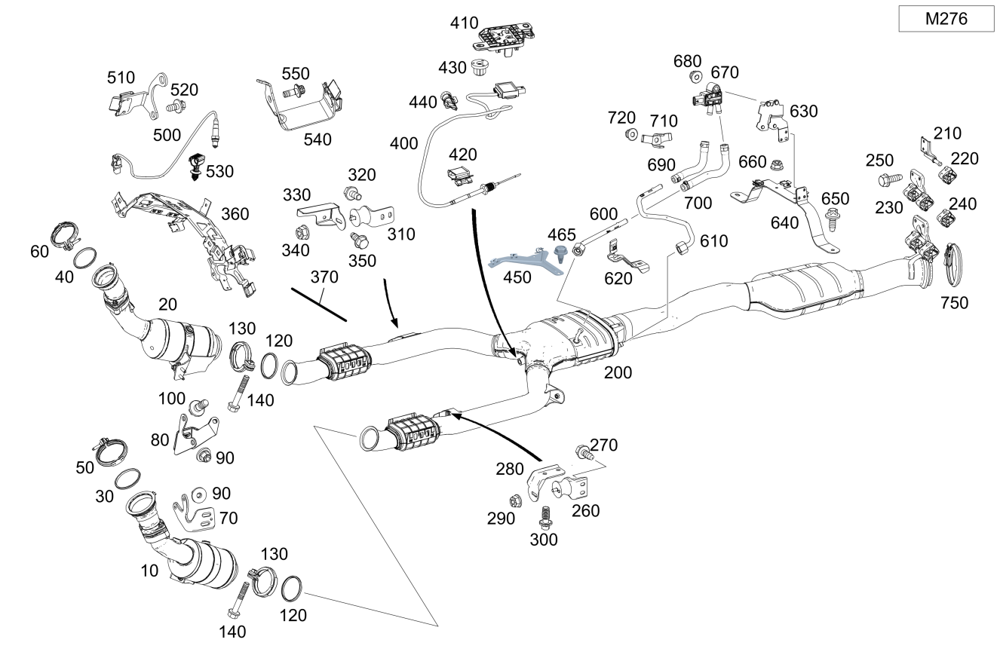

| № | Артикул | Название | Кол. | Примечание |
|---|---|---|---|---|
| 10 | A 276 140 94 13 | Трубка выпуска ОГ (EXHAUST GAS LINE) | 1 | Спереди слева |
| 10 | A 276 140 13 00 | Трубка выпуска ОГ (EXHAUST GAS LINE) | 1 | Спереди слева |
| 10 | A 276 140 13 00 | Трубка выпуска ОГ (EXHAUST GAS LINE) | 1 | Спереди слева |
| 20 | A 276 140 14 00 | Трубка выпуска ОГ (EXHAUST GAS LINE) | 1 | Спереди справа |
| 20 | A 276 140 96 13 | Трубка выпуска ОГ (EXHAUST GAS LINE) | 1 | Спереди справа |
| 20 | A 276 140 14 00 | Трубка выпуска ОГ (EXHAUST GAS LINE) | 1 | Спереди справа |
| 30 | A 274 142 00 80 | Полуметал. уплотнение (METAL-SOFT-MATERIAL SEAL) | 1 | Трубопровод ОГ слева |
| 40 | A 276 142 09 80 | Полуметал. уплотнение (METAL-SOFT-MATERIAL SEAL) | 1 | Трубопровод ОГ справа |
| 50 | A 000 995 36 33 | Проф. хомут сист. вып. ОГ (PROFILE CLAMP, EXH. SYS.) | 1 | Трубопровод ОГ слева |
| 60 | A 000 995 35 33 | Проф. хомут сист. вып. ОГ (PROFILE CLAMP, EXH. SYS.) | 1 | Трубопровод ОГ справа |
| 70 | A 276 142 27 40 | Держатель (HOLDER) | 1 | К трубопроводу ОГ слева |
| 70 | A 276 142 35 40 | Держатель (HOLDER) | 1 | К трубопроводу ОГ слева |
| 80 | A 276 142 45 40 | Держатель (HOLDER) | 1 | К трубопроводу ОГ справа |
| 80 | A 276 142 47 40 | Держатель (HOLDER) | 1 | К трубопроводу ОГ справа |
| 80 | A 213 492 28 00 | Держатель (HOLDER) | 1 | К трубопроводу ОГ справа |
| 90 | N 000000 004012 | ГАЙКА КОМБИНИРОВАННАЯ (NUT-AND-WASHER ASSEMBLY) | 4 | Держатель к трубопроводу ОГ слева и справа |
| 100 | N 000000 000276 | Винт с 6-гр. глвк (HEXALOBULAR SCREW) | 1 | Держатель к коробке передач; M8X20 |
| 120 | A 220 492 02 81 | Уплотнительное кольцо (SEALING RING) | 2 | Слева и справа |
| 130 | A 203 490 06 41 | Трубн. хомут сист.вып. ОГ (PIPE CLAMP, EXHAUST SYS.) | 2 | Слева и справа |
| 140 | N 910105 008019 | Винт с 6-гранной головкой (HEXAGON HEAD BOLT) | 2 | Слева и справа; M8X50 |
| 200 | A 205 490 71 20 | Ср. трубопровод ОГ (EXHAUST GAS LINE, CENTER) | 1 | Спереди |
| 200 | A 205 490 68 03 | Трубопровод ОГ пер. (EXHAUST GAS LINE, FRONT) | 1 | Спереди |
| 200 | A 205 490 60 03 | Трубопровод ОГ пер. (EXHAUST GAS LINE, FRONT) | 1 | Спереди |
| 200 | A 205 490 47 20 | Трубка выпуска ОГ (EXHAUST GAS LINE) | 1 | Спереди |
| 200 | A 205 490 68 03 | Трубопровод ОГ пер. (EXHAUST GAS LINE, FRONT) | 1 | Спереди |
| 200 | A 205 490 60 03 | Трубопровод ОГ пер. (EXHAUST GAS LINE, FRONT) | 1 | Спереди |
| 230 | A 205 490 29 40 | Держатель (HOLDER) | 1 | На заднем мосту (левая сторона) |
| 230 | A 205 490 30 40 | Держатель (HOLDER) | 1 | На заднем мосту (правая сторона) |
| 240 | A 231 492 00 44 | Подвес трубопровода ОГ (SUSPENSION, EXH. GAS LINE) | 2 | Сзади |
| 240 | A 231 492 00 44 | Подвес трубопровода ОГ (SUSPENSION, EXH. GAS LINE) | 2 | Сзади |
| 240 | A 231 492 00 44 | Подвес трубопровода ОГ (SUSPENSION, EXH. GAS LINE) | 2 | Сзади |
| 250 | N 000000 007953 | Винт с 6-гранной головкой (HEXAGON HEAD BOLT) | 2 | К заднему мосту; M8X25 |
| 260 | A 205 490 00 00 | Держатель (HOLDER) | 1 | К трубопроводу ОГ слева |
| 270 | N 910105 008008 | Винт с 6-гранной головкой (HEXAGON HEAD BOLT) | 2 | Держатель к трубопроводу ОГ слева; M8X16 |
| 280 | A 205 492 00 00 | Держатель (HOLDER) | 1 | К креплению кронштейна опоры двигателя слева |
| 290 | N 000000 003175 | Гайка (NUT) | 1 | Держатель к держателю; M8 |
| 300 | A 001 990 70 03 | Винт Torx External (HEXALOBULAR HEAD SCREW) | 2 | Держатель к креплению кронштейна опоры двигателя слева |
| 300 | A 000 990 97 08 | Самонарезающий винт (SELF-TAPPING SCREW) | 2 | Держатель к креплению кронштейна опоры двигателя слева; M10X22 |
| 310 | A 205 490 01 00 | Держатель (HOLDER) | 1 | К трубопроводу ОГ |
| 320 | N 910105 008008 | Винт с 6-гранной головкой (HEXAGON HEAD BOLT) | 2 | Держатель к продольному несущему элементу; M8X16 |
| 330 | A 205 492 02 00 | Держатель (HOLDER) | 1 | К лонжерону |
| 330 | A 205 492 13 00 | Держатель (HOLDER) | 1 | К лонжерону |
| 340 | N 000000 003175 | Гайка (NUT) | 1 | Держатель к держателю; M8 |
| 340 | N 000000 008303 | Шестигранная гайка (HEXAGON NUT) | 1 | Держатель к держателю; M8 |
| 350 | N 910105 008008 | Винт с 6-гранной головкой (HEXAGON HEAD BOLT) | 3 | Держатель к продольному несущему элементу; M8X16 |
| 360 | A 278 150 20 73 | Держатель (HOLDER) | 1 | Провода зондов над коробкой передач |
| 370 | A 205 540 00 94 | Электрический жгут (ELECTRICAL WIRING HARNESS) | 1 | Датчик температуры сажевого фильтра бензинового двигателя B19/12\-X101/4 |
| 400 | A 000 905 74 09 | Датчик температуры (TEMPERATURE SENSOR) | 1 | Датчик температуры перед сажевым фильтром |
| 400 | A 000 905 00 12 | Датчик температуры (TEMPERATURE SENSOR) | 1 | Датчик температуры перед сажевым фильтром |
| 400 | A 000 905 54 10 | Датчик температуры (TEMPERATURE SENSOR) | 1 | Датчик температуры перед сажевым фильтром |
| 400 | A 000 905 54 10 | Датчик температуры (TEMPERATURE SENSOR) | 1 | Датчик температуры перед сажевым фильтром |
| 400 | A 000 905 54 10 | Датчик температуры (TEMPERATURE SENSOR) | 1 | Датчик температуры перед сажевым фильтром |
| 400 | A 000 905 54 10 | Датчик температуры (TEMPERATURE SENSOR) | 1 | Датчик температуры перед сажевым фильтром |
| 400 | A 000 905 00 12 | Датчик температуры (TEMPERATURE SENSOR) | 1 | Датчик температуры перед сажевым фильтром |
| 410 | A 177 159 21 00 | Держатель (HOLDER) | 1 | Температурный датчик |
| 420 | A 000 541 01 40 | Держатель (HOLDER) | 2 | Датчик температуры; 18 X 24 MM |
| 430 | A 000 990 36 62 | Пластмассовая гайка (PLASTIC NUT) | 2 | Держатель датчика температуры |
| 440 | A 003 995 86 77 | Крепеж (трубо)провода (LINE FASTENER) | 1 | Датчик температуры |
| 450 | A 276 150 78 00 | Держатель (HOLDER) | 1 | Датчик температуры |
| 450 | A 276 150 78 00 | Держатель (HOLDER) | 1 | Датчик температуры |
| 465 | A 000 990 16 17 | болт (SCREW) | 2 | Крепление держателя; M6X12 |
| 465 | A 000 990 16 17 | болт (SCREW) | 2 | Крепление держателя; M6X12 |
| 500 | A 009 542 60 18 | Лямбда-зонд (LAMBDA SENSOR) | 1 | Регулирующий зонд слева перед катализатором |
| 500 | A 009 542 62 18 | Лямбда-зонд (LAMBDA SENSOR) | 1 | Регулирующий зонд справа перед катализатором |
| 500 | A 008 542 33 18 | Лямбда-зонд (LAMBDA SENSOR) | 1 | Диагностический зонд слева после катализатора |
| 500 | A 000 542 14 00 | Лямбда-зонд (LAMBDA SENSOR) | 1 | Диагностический зонд слева после катализатора |
| 500 | A 000 542 16 00 | Лямбда-зонд (LAMBDA SENSOR) | 1 | Диагностический зонд слева после катализатора |
| 500 | A 008 542 33 18 | Лямбда-зонд (LAMBDA SENSOR) | 1 | Диагностический зонд справа после катализатора |
| 500 | A 000 542 14 00 | Лямбда-зонд (LAMBDA SENSOR) | 1 | Диагностический зонд справа после катализатора |
| 500 | A 000 542 16 00 | Лямбда-зонд (LAMBDA SENSOR) | 1 | Диагностический зонд справа после катализатора |
| 500 | A 000 542 20 04 | Лямбда-зонд (LAMBDA SENSOR) | 1 | Диагностический зонд справа после катализатора |
| 500 | A 000 542 20 04 | Лямбда-зонд (LAMBDA SENSOR) | 1 | Диагностический зонд справа после катализатора |
| 500 | A 000 542 16 00 | Лямбда-зонд (LAMBDA SENSOR) | 1 | Диагностический зонд справа после катализатора |
| 510 | A 207 547 00 40 | Держатель (HOLDER) | 1 | Крепление провода зонда |
| 520 | N 000000 001114 | Винт с 6-гр. глвк (HEXALOBULAR SCREW) | 1 | Крепление провода зонда; M6X15 |
| 530 | A 004 995 79 77 | Крепеж (трубо)провода (LINE FASTENER) | 1 | Крепление провода зонда |
| 540 | A 213 547 01 00 | Держатель (HOLDER) | 1 | Отдельный провод к блоку цилиндров справа |
| 550 | N 000000 001114 | Винт с 6-гр. глвк (HEXALOBULAR SCREW) | 1 | Кронштейн к блоку цилиндров (задний правый); M6X15 |
| 550 | N 910143 006000 | Винт с 6-гр. глвк (HEXALOBULAR SCREW) | 1 | Кронштейн к блоку цилиндров (задний правый); M6X12 |
| 600 | A 205 490 67 03 | Напорный трубопровод (PRESSURE LINE) | 1 | К сажевому фильтру (передняя сторона) |
| 610 | A 205 490 46 03 | Напорный трубопровод (PRESSURE LINE) | 1 | К сажевому фильтру (задняя сторона) |
| 620 | A 205 491 62 00 | Держатель (HOLDER) | 1 | Напорный трубопровод |
| 630 | A 205 491 64 00 | Держатель (HOLDER) | 1 | Дифференциальный датчик давления |
| 630 | A 205 491 64 00 | Держатель (HOLDER) | 1 | Дифференциальный датчик давления |
| 640 | A 205 491 66 00 | Держатель (HOLDER) | 1 | Дифференциальный датчик давления |
| 640 | A 205 491 66 00 | Держатель (HOLDER) | 1 | Дифференциальный датчик давления |
| 650 | N 910143 006000 | Винт с 6-гр. глвк (HEXALOBULAR SCREW) | 2 | Держатель к держателю; M6X12 |
| 650 | N 910143 006000 | Винт с 6-гр. глвк (HEXALOBULAR SCREW) | 2 | Держатель к держателю; M6X12 |
| 650 | N 910143 006000 | Винт с 6-гр. глвк (HEXALOBULAR SCREW) | 2 | Держатель к держателю; M6X12 |
| 660 | N 000000 003477 | Гайка (NUT) | 2 | Держатель к экрану; M6 |
| 670 | A 000 905 78 09 | Датчик давления (PRESSURE SENSOR) | 1 | Перепад давления в сажевом фильтре бензинового двигателя |
| 680 | N 000000 003477 | Гайка (NUT) | 2 | Напорные трубопроводы к кронштейну; M6 |
| 680 | N 000000 003477 | Гайка (NUT) | 2 | Напорные трубопроводы к кронштейну; M6 |
| 690 | A 205 492 33 00 | Шланг выпускной системы (EXHAUST GAS HOSE) | 1 | Перед сажевым фильтром (левая сторона) |
| 690 | A 205 492 33 00 | Шланг выпускной системы (EXHAUST GAS HOSE) | 1 | Перед сажевым фильтром (левая сторона) |
| 690 | A 205 492 34 00 | Шланг выпускной системы (EXHAUST GAS HOSE) | 1 | Перед сажевым фильтром (правая сторона) |
| 690 | A 205 492 34 00 | Шланг выпускной системы (EXHAUST GAS HOSE) | 1 | Перед сажевым фильтром (правая сторона) |
| 700 | A 205 492 35 00 | Шланг выпускной системы (EXHAUST GAS HOSE) | 1 | После сажевого фильтра (левая сторона) |
| 700 | A 205 492 36 00 | Шланг выпускной системы (EXHAUST GAS HOSE) | 1 | После сажевого фильтра (правая сторона) |
| 710 | A 205 491 57 00 | Фиксатор от провор. (ANTI-TWIST LOCK) | 1 | Напорный трубопровод к держателю |
| 710 | A 205 491 63 00 | Фиксатор от провор. (ANTI-TWIST LOCK) | 2 | Напорный трубопровод к держателю |
| 710 | A 205 491 63 00 | Фиксатор от провор. (ANTI-TWIST LOCK) | 2 | Напорный трубопровод к держателю |
| 720 | N 000000 003477 | Гайка (NUT) | 1 | Напорный трубопровод к держателю; M6 |
| 720 | N 913023 005002 | Гайка (NUT) | 2 | Напорный трубопровод к держателю; M5 |
| 720 | N 913023 005002 | Гайка (NUT) | 2 | Напорный трубопровод к держателю; M5 |
| 750 | A 000 995 17 33 | Проф. хомут сист. вып. ОГ (PROFILE CLAMP, EXH. SYS.) | 1 | Выпускной трубопровод спереди к выпускному трубопроводу сзади слева |
| 800 | A 205 490 24 35 | Трубка выпуска ОГ (EXHAUST GAS LINE) | 1 | Сзади слева и справа |
| 800 | A 205 490 24 35 | Трубка выпуска ОГ (EXHAUST GAS LINE) | 1 | Сзади слева и справа |
| 800 | A 205 490 63 03 | Трубопровод ОГ задний (EXHAUST GAS LINE, REAR) | 1 | Сзади слева и справа |
| 810 | A 205 490 15 35 | Трубка выпуска ОГ (EXHAUST GAS LINE) | 1 | Сзади слева |
| 810 | A 205 490 55 00 | Трубопровод ОГ задний (EXHAUST GAS LINE, REAR) | 1 | Сзади слева |
| 810 | A 205 490 15 35 | Трубка выпуска ОГ (EXHAUST GAS LINE) | 1 | Сзади слева |
| 820 | A 002 995 38 02 | Трубный хомут (PIPE CLAMP) | 1 | Трубопровод ОГ слева к трубопроводу ОГ справа; Ø 60 MM |
| 830 | A 205 490 22 35 | Трубка выпуска ОГ (EXHAUST GAS LINE) | 1 | Справа |
| 830 | A 205 490 53 00 | Трубопровод ОГ задний (EXHAUST GAS LINE, REAR) | 1 | Справа |
| 830 | A 205 490 22 35 | Трубка выпуска ОГ (EXHAUST GAS LINE) | 1 | Справа |
| 840 | A 205 490 24 40 | Держатель (HOLDER) | 1 | Выпускная труба сзади слева к кузову |
| 850 | A 205 490 26 40 | Держатель (HOLDER) | 1 | Выпускная труба сзади справа к кузову |
| 860 | A 231 492 00 44 | Подвес трубопровода ОГ (SUSPENSION, EXH. GAS LINE) | 2 | Слева и справа |
| 870 | N 000000 008385 | Винт с 6-гр. глвк (HEXALOBULAR SCREW) | 2 | Несущий кронштейн к кузову справа; M8X22 |
| 880 | N 000000 007013 | Винт с 6-гр. глвк (HEXALOBULAR SCREW) | 2 | Держатель к кузову слева и справа; M8X16 |
| 880 | N 000000 008385 | Винт с 6-гр. глвк (HEXALOBULAR SCREW) | 2 | Держатель к кузову слева и справа; M8X22 |
Позиций: 122 · подписано на схемах: 122 · колесо — плавный зум в курсор, перетаскивание — пан, двойной клик — зум, клик по артикулу — скопировать.